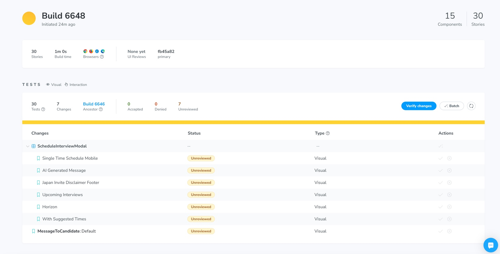
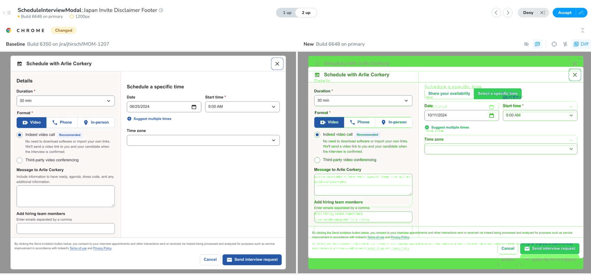
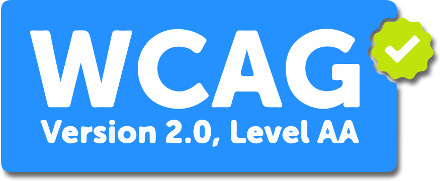

Indeed Interview Scheduling
Role: UX Developer
Toolkit: React, Typescript, Emotion (CSS in JS), Storybook, Chromatic
Overview
At Indeed, the role of a UX Developer fell under the UX Org, along with Designers and Researchers. Each product team usually consisted of a Product Manager, a Technical Design Manager, a handful of Software Engineers, and an embedded UX Designer and Developer. As a UX Dev, it was my responsibility to collaborate with Designers and Product Managers, and implement the UI for product features, as well as communicate any updates and best practices to these teams, that fell under the Product Org.
During my 5.5 years at Indeed, I worked on a handful of teams within the Employer side of the platform, the last one being the Interview Scheduling team, which owned a form that allowed an employer to send an invitation to a candidate for an interview. The form had a number of inputs that were imported React components from Indeed's design system library, which allowed the employer to specify duration, format, date, time and a few other options within the interview invitation.
Maintaining the UI with Storybook
I'm a strong ambassador for UI development tools, one of them being Storybook. As the UX Developer for this team, I was the person in charge of ensuring the UI/UX of this product feature looked and functioned as it should across all our supported devices. When I joined the team, they had Storybook set up for their product components, but they had grown a bit stale, and didn't represent all the various states that the components could display. I took it upon myself to audit the product in order to identify components that were missing, obsolete, or needed updating, such as arguments and parameters for altering the UI under certain conditions, for example, theming, translations, running interaction tests using the Storybook Play feature, and variables that controlled the UI for new experiments.
I then created tickets in Jira for all these tasks and rallied the team to contribute to this improvement by explaining how other teams at Indeed could then easily preview and test our product to determine if it could be imported and surfaced within their respective products, therefore increasing the added value of our product.
Testing the UI with Chromatic
I'm also a strong advocate for development tools that can help automate certain tasks, such as tests, so when I heard that another team at Indeed implemented Chromatic, which eliminates the need for manual visual regression testing, I jumped at the chance to integrate that for my team.
Collaborating with the UX Dev who had already installed it for his team, I was able to get it up and running fairly easily within my team's GitLab pipeline. Afterwards, I gave the rest of the team a rundown on how it worked, and how to inspect visual diffs and accept or reject them.
 Installing Chromatic was a definite win for our product, since it sped up our deployments, and even the team's UX Designer was thankful for the proactive work I put in to help keep our UI looking great.
Ensuring an accessible product
One of my final projects while at Indeed was part of a larger company-wide initiative to improve our accessibility by a certain date in order to reach a goal of 90% completion for all issues deemed as serious & critical WCAG 2.0 violations. These violations were found by an audit performed by a 3rd party Indeed had contracted.
I took the lead for this work on the Scheduling team product, triaging Jira tickets, estimating level of effort and time to complete, then implementing the majority of the tickets. For issues that other Engineers implemented, I'd make sure to review the code and provide feedback to ensure the work met the criteria for completion. On some occasions, the explanation for the issue wasn't fully clear within the ticket filed by the 3rd party, so I'd have to reach out for more clarification. Some of these collaborations with the people who logged the tickets were eye-opening, and I learned quite a bit from these individuals, who themselves were users with some level of disability. One email conversation in particular was a challenge since the person was blind and using a screen reader to traverse the DOM, so I had to relearn how I described the UI to this person by giving landmark references instead of just saying “the big blue button at the bottom.”
One issue that took some digging into had to do with the focus order being lost when a button was clicked and new content was inserted into the DOM. You can see in this screen recording that the tabbing focus order is lost once the user hits the enter key on the "Connect your calendar" button...
The cause for this behavior is due to the fact that the button that had focus was removed from the
DOM. Once that happens, the tabbing order is lost and it falls back to the first element in the
parent (the modal). Ideally, the UX should have been adjusted so that there was no "Connect your
calendar" button, and just have all the various platform buttons surfaced from the get-go. However,
this was a high priority fix that needed to be resolved quickly, so the quick fix was to implement
the React useRef hook and force the focus back to the first new button that is inserted
into the DOM, as show here...
Helping other teams reach their goals
The number of accessibility issues for the Interview Scheduling team was actually not too large, in part because we had good semantic HTML to begin with, but some other teams were not as fortunate. After I was able to close out all our issues, I extended my help out to teams who needed a hand. One of those issue involved some list items within a drop down that weren't being announced by screen readers. You can see this happening here (turn volume up to hear the screen reader)...
This issue was due to the way the dropdown HTML was structured. The fix for this was also rather simple: adding the correct aria attributes that allowed the text to be associated with the focused HTML element.